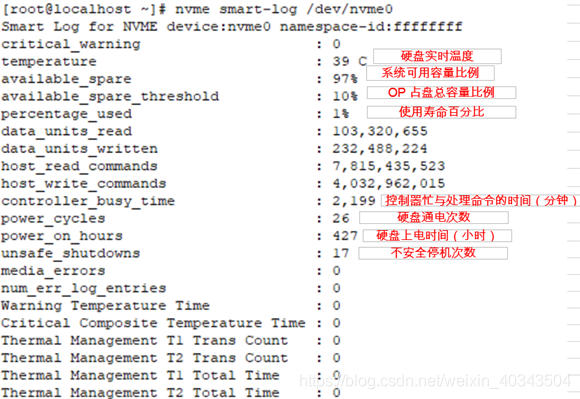
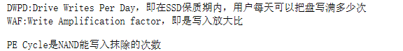

nvme cli常用指令
NVMe management command line interface
1.下载地址
https://github.com/linux-nvme/nvme-cli
2.安装
1 | unzip nvme-cli-master.zip |
/dev/nvme1 nvme1为主控
/dev/nvme1n1 nvme1n1为NVMe硬盘名称
/dev/nvme1n1p1 硬盘nvme1n1的分区
3.常用指令
1）nvme format -s 1 /dev/nvme1n1 格式化硬盘（secure erase drives）

nvme format /dev/nvme1n1 -n 1 -l 1 4k对齐
nvme format /dev/nvme1n1 -n 1 -l 0 恢复初始状态512
nvme format /dev/nvme1n1 -l 0 Optane device Units512
参数详情请参考：http://www.pudn.com/Download/item/id/3180638.html
2）nvme smart-log /dev/nvme0n1 读取硬盘nvme0n1的smart信息
部分其他参数详解参考：https://www.percona.com/blog/2017/02/09/using-nvme-command-line-tools-to-check-nvme-flash-health/
3）nvme升/降固件版本
nvme reset /dev/nvme1 重置硬盘（NVMe硬盘固件版本进行upgrade/downgrading后要进行reset后才能effective，如果不重置主控需reboot 系统）
4)OP(Over-Provisioning)
为什么要进行OP，请参考：https://blog.csdn.net/weixin\_40343504/article/details/83145713
1 | nvme admin-passthru /dev/nvme0 -o 0x9 --cdw10=0xc1 --cdw11=0x2000000 --cdw12=0x0 |
OP to GB
1.The decimal value of LBA is (X * 1000 * 1000 * 1000 / 512), then convert it to Hex Value.
2. Put the Hex Value to cdw11
3. If the Hex Value over 0xFFFFFFFF, put the high overflow digits to cdw 12.
4. Example:
⦁ 3200 GB
⦁ Decimal value is 6,250,000,000 and Hex Value is 0x174876E80
The value for cdw12 should be 0x1 and for cdw11 is 0x74876E80.
⦁ 2000 GB
⦁ Decimal value is 3,906,250,000 and Hex Value is 0xE8D4A510
The value for cdw12 should be 0x0 and for cdw11 is 0xE8D4A510.
⦁ 4000 GB
⦁ 7,814,037,168 // 0x1 D1C0 BEB0
⦁ 7200 GB - 0x3 4630 B8A0
6400 GB - 0x2 E90E DD00
例一：
例二：
原容量OPed到3.4T
1 | [root@localhost nvme-cli-master]# nvme admin-passthru /dev/nvme9n1 -o 0x9 --cdw10=0xc1 --cdw11=0x18BCFE568 --cdw12=0x1 |
5）nvme-cli 创建namespaces
什么是Namespace?
简单地说，namespace是对用户空间的逻辑划分，就是把用户空间这块大披萨划分开，大家各吃各的。那么大披萨长什么样呢？划成一片片儿披萨又什么样呢？我们知道，跟其他传统的存储设备一样，非易失性存储器也是可以格式化为逻辑块的，每个逻辑块都有自己的地址，俗称logical block address，简称LBA，我们就是通过LBA来吃披萨（读写IO）的。逻辑地址长相很普通，是从0,1,2….直到最大块地址。
逻辑块地址计算是有讲究的，严格依据JEDEC218A里面定义的逻辑块与容量关系公式。比如4KiB一个逻辑块的话， 500G就需要2646 + 244188 * 500 = 122096646个逻辑地址了，这些逻辑块就组成了namespace(512B一块逻辑块的话，500G就需要21168+1953504*500=976773168个逻辑地址)。那么一块SSD是否可以划分为多个namespace来供不同的应用场景使用呢？答案是肯定的。
例如：创建一个500G和一个465G的namaspaces
检查SSD上剩余空间是否足够创建目标namespace。使用Identify命令查看unvmcap的值可知剩余可分配容量，单位是Byte。
1 |
|
4.PCIe硬盘寿命计算
可以通过nvme-cli读取PCIe硬盘smart信息，进行进行计算硬盘的Endurance、DWPD(Drive Writes Per Day)。
建议寿命测试仅企业级可能有必要，个人没必要进行此项操作。
a.测试前读取硬盘smart-log信息
1 | [root@localhost nvme-cli-master]# nvme intel smart-log-add /dev/nvme0n1 |
b.fio进行读写一定的数据
c.fio结束后再次执行nvme intel smart-log-add /dev/nvme0n1读取smart-log信息
d.计算
盘进入稳态后进行随机写得到DWPD的值更为准确
